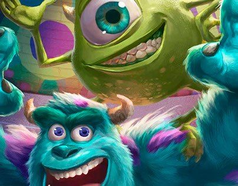
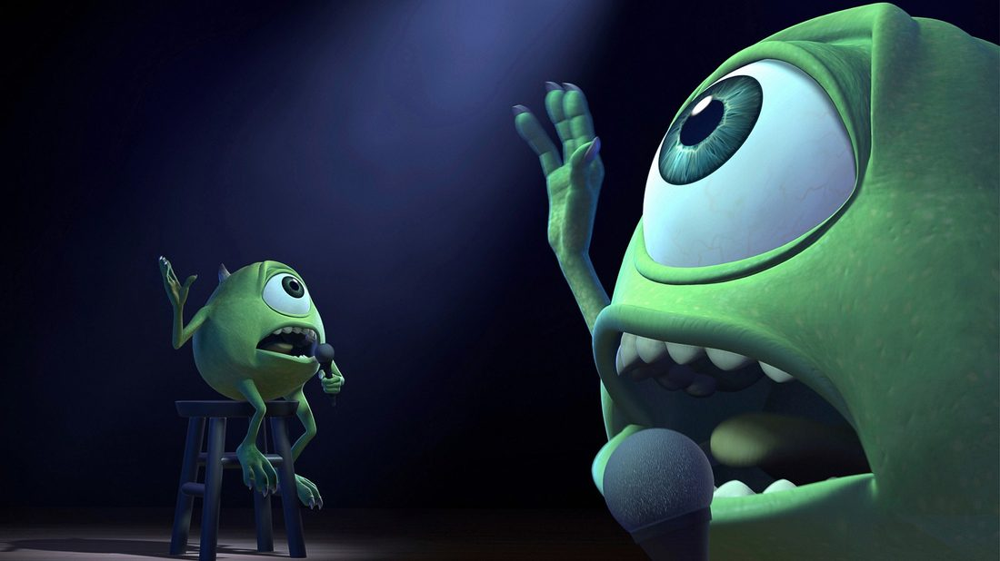
Como en Monsters Inc., el mundo cultural también tiene su propia fábrica de energía: tendencias globales, brechas de desigualdad y movimientos sociales que están reconfigurando la cultura del siglo XXI, puerta por puerta.
"Estaba ahí desde el principio: la energía no se crea, se transforma." — la fábrica de Monsters Inc., aplicada a la cultura global.


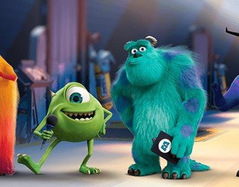
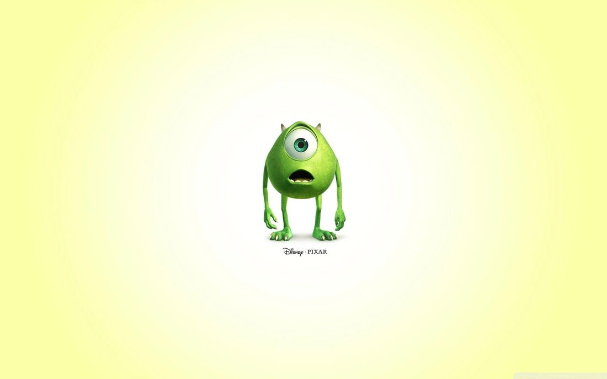
"Hay una puerta para cada sustito, pero solo unas pocas se abren al mismo tiempo." — así reparten también los Estados su presupuesto cultural.
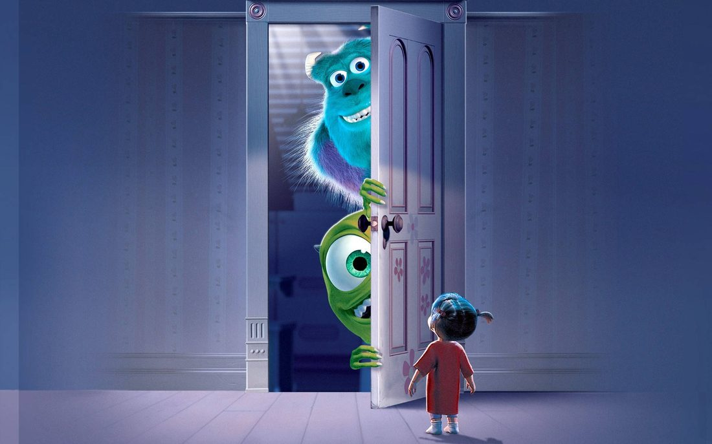
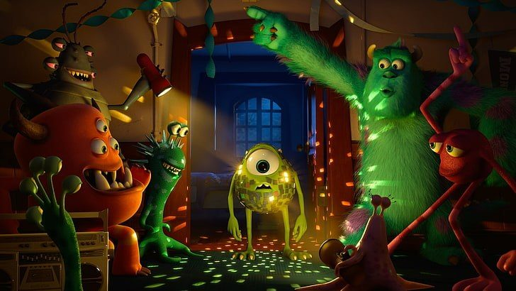
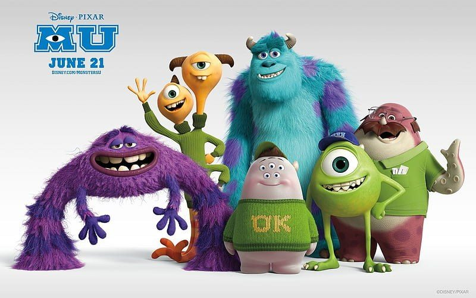
"Ya no asustamos, generamos risas." — el cambio de modelo de negocio de Monsters Inc., igual de drástico que el cambio del orden mundial.
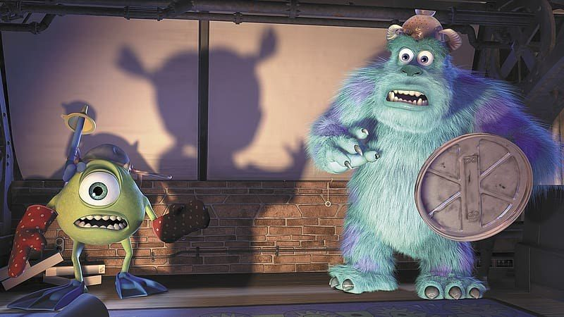
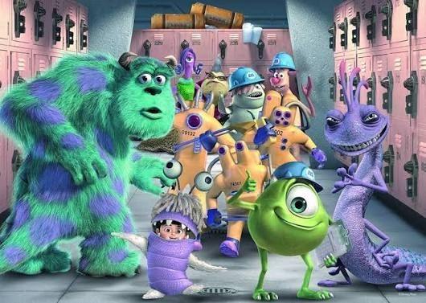
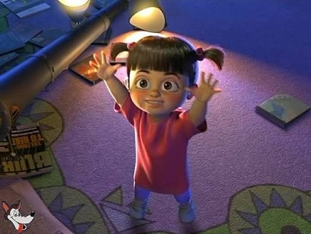
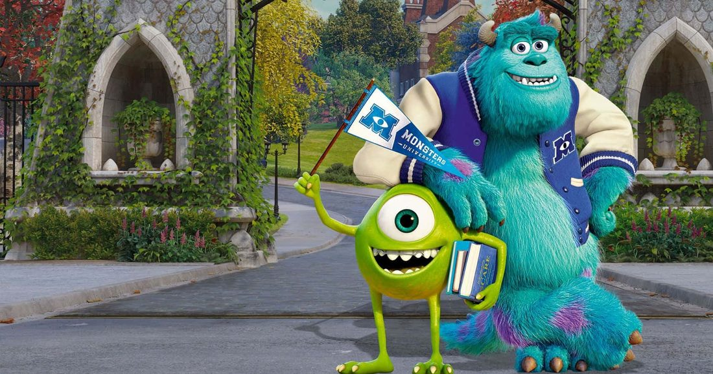
"Solo trabajando juntos podemos generar el cambio que el mundo necesita." — Mike Wazowski, también podría haber dicho esto en una asamblea.
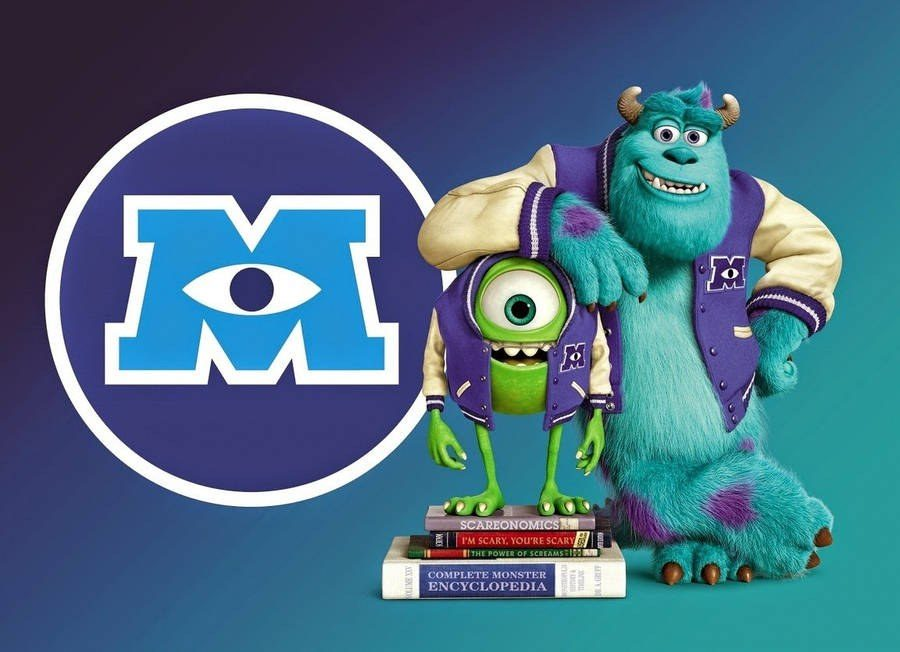
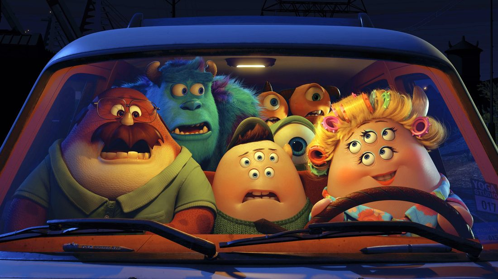
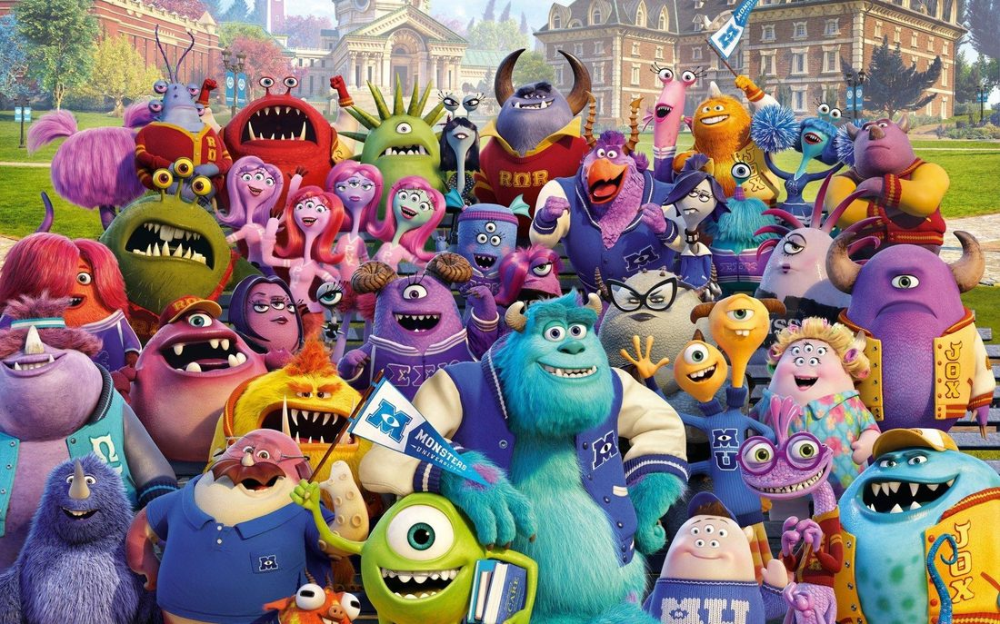